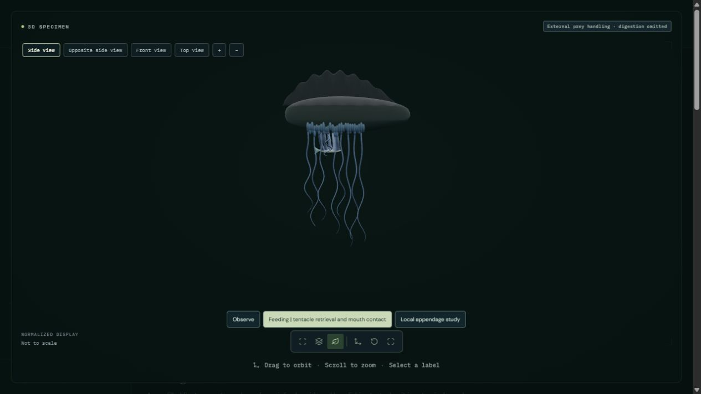

Open Portuguese man-of-war | Razor-shell correction
An illustrative fish contacts one fishing tentacle and remains attached as that strand shortens. Separate feeding zooids then reach the fish and spread their mouth margins over its surface. The fish remains visible at the final hold; no disappearance represents digestion. This twenty-second sequence is a qualitative presentation, not measured animal timing.
Partial external contact, tentacle retrieval and spreading mouth margins only. Nematocyst discharge, venom, chemical sensing, enzymes, ingestion, digestion, fluid forces and sailing are not simulated. Selected zooid counts, proportions, pigment and timing are authored; photorealism and physiological accuracy remain unvalidated.

Lenhoff and Schneiderman (1959): The chemical control of feeding in the Portuguese man-of-war. Full paper and actual Figures1–8 inspected. Woods Hole colonies retrieve fish with fishing tentacles; separate feeding zooids spread their mouths on prey. Laboratory spreading takes minutes, not the twenty-second display. Opening a mouth alone is not treated as feeding.
The float, crest, source mesh arrays, UVs, colors, photographs and licenses are preserved. The illustrated fish is not identified as a particular prey species. The display omits neural and chemical mechanisms and does not claim that arbitrary mouth opening proves feeding.
44 animal processes remain fully pending. Partial implementations retain their scientific limitations.